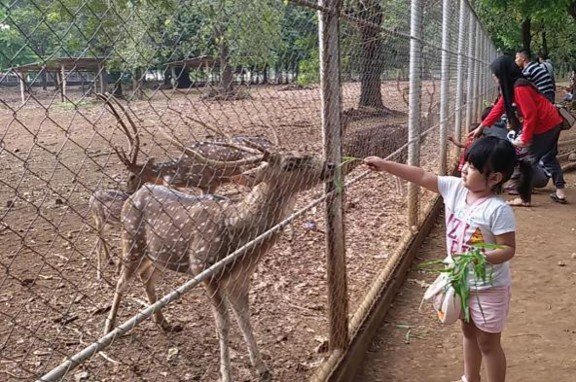
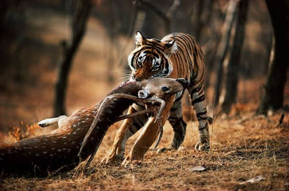

Animal Welfare · Week 1 Module
Human-Animal Dynamics and Animal Welfare
1Opening and learning outcome
This module teaches students to read any human-animal situation through two questions: how much contact do people have with the animal, and how much do people control its life. The answers indicate where welfare hazards of human origin are most likely to reach the animal.
1.1 Hook: one species, two situations
Two photographs of chital deer (spotted deer, Axis axis). Look at both, answer the two questions below in your own words, and only then open the notes.

img/deer-park-enclosure.jpgWhat information is missing before anyone can judge? The size of the enclosure, the diet, who provides water, veterinary care, what visitors feed the deer, how many visitors come each day.
Responsibility. Almost every condition the deer experiences is chosen or permitted by people, so responsibility is high.

img/deer-tiger-forest.jpgEvent or conditions? Students usually rate Image B as worse because it shows predation. Separate the event (a death) from the conditions of life (food, space, health, freedom to behave naturally). Welfare is about the conditions in which an animal lives and dies, so one photograph cannot settle the question.
Responsibility. The predator-prey event is natural, so direct responsibility is low. People still shape the deer's world there through habitat, hunting pressure and land use.
Same species, different relationship to humans. The more people shape an animal's life, the more responsibility they carry for its welfare.
Open the notes under both photographs to see the closing sentence.
1.2 Learning outcome
By the end of this module, students will be able to analyze how a person's contact with and influence over an animal shape how exposed the animal is to welfare hazards.
2Animal welfare and why it matters
Animal welfare is a measure of an animal's quality of life. Everything else in this part refines that sentence and explains why it deserves our attention.
2.1 Three definitions, from simple to formal
Level 1 is open. Answer the check question below the cards to unlock Levels 2 and 3.
The memory version
Animal welfare is a measure of an animal's quality of life.
Students should be able to say this sentence from memory. It carries two ideas: welfare is a state of the animal (an outcome that can be good or poor), and it sits on a scale (better or worse, not present or absent).
The WOAH version
🔒 LockedAnimal welfare means the physical and mental state of an animal in relation to the conditions in which it lives and dies. (World Organisation for Animal Health)
Two additions to notice: both body and mind count, and the definition covers how the animal dies as well as how it lives.
The Indonesian legal version
🔒 LockedThe Indonesian Law on Animal Husbandry and Animal Health defines animal welfare as all matters related to the physical and mental condition of animals, according to the natural behavior of the animal, that need to be applied and enforced to protect animals from improper treatment by any person toward animals used by humans. (Unofficial translation of the original Indonesian text.)
A useful exercise is to split the legal sentence into parts:
| Phrase in the law | What it tells us |
|---|---|
| physical and mental condition | the same two dimensions as WOAH |
| according to the natural behavior of the animal | what is normal for that species |
| applied and enforced | welfare is a duty to act, backed by authority |
| to protect animals from improper treatment by any person | the threat the law has in mind is human conduct |
| animals used by humans | the scope: animals that people keep or use |
The last row sets the scope: the law is written for animals that people keep or use.
2.2 Welfare is a spectrum
Welfare is a matter of degree. An animal's state can be very poor, very good, or anywhere between, and its position can change over weeks or within a single day.
Two consequences follow. A question such as "does this animal have welfare?" has no yes or no answer; the answerable question is where the animal sits on the line and what evidence supports that position. Two animals of the same species can sit at different points, and one animal can move along the line as its conditions change.
2.3 Welfare of individuals and of populations
Animal welfare is a state of an individual animal, because only an individual can feel pain, fear or comfort. A population feels nothing. When a text speaks of the welfare of a herd, a flock or a wildlife population, it means the welfare of the individuals in it.
Population measures such as the trend in numbers (rising or falling) and the composition (many young or old animals, the balance of males and females) describe the health and conservation status of a population. They are useful clues, but they are indirect. A growing population can still contain many suffering individuals, and a stable one can hide poor welfare. Group welfare is assessed by measuring indicators in many individuals, for example the share of a flock with lameness. For wildlife the same approach applies to sampled animals: body condition, injuries, disease and behavior. Population counts serve as supporting evidence.
2.4 Why does animal welfare matter?
There are two families of reasons. Students should be able to state both and say which one they find more persuasive for a given audience.
Reason 1: it matters for the animal itself (intrinsic value)
Animals are living beings that can feel pain and can suffer. For that reason, their condition deserves respect and consideration on moral grounds, whether or not a person gains anything from it.
Reason 2: it matters for people (consequences for humans)
| Benefit to people | How welfare produces it |
|---|---|
| Better human-animal interaction | calm, healthy animals are safer and easier to handle, for owners, farmers and veterinarians |
| Lower cost of disease and injury | fewer treatments, fewer losses, less medication |
| Better quality and safety of animal-derived food | stress before slaughter is linked to poorer meat quality, and stress can increase pathogen shedding in some livestock (the strength of evidence differs by species) |
| Better reputation | industries, institutions and individuals responsible for animal lives are judged by how those animals are treated |
Discussion prompt
A smallholder who raises chickens, a pet owner, and an animal ethicist each ask why they should care about welfare. Which reason would you lead with for each person? Why?
This prompt has no single right answer. The aim is to show that the same concept can be justified in more than one way, and that a veterinarian often has to speak to several audiences.
3Vocabulary: interaction, relationship and bond
Researchers use three different words for how people and animals connect, and the words are not interchangeable. This part gives students a shared vocabulary for naming what happens when a person and an animal meet.
3.1 Three terms
The distinction goes back to the work of Robert Hinde on social relationships and has been applied to human-animal contact by Hosey and Melfi (2014).
| Term | Abbreviation | Meaning | Time scale | Example |
|---|---|---|---|---|
| Human-animal interaction | HAI | a single event of contact between a person and an animal | one episode | a veterinarian restrains a dog for an injection; a visitor feeds a deer through a fence |
| Human-animal relationship | HAR | a pattern built from repeated interactions between the same individuals, in which each side comes to expect certain behavior from the other | weeks to years | a stockperson who handles the same herd every day; the cows learn whether this person means calm or threat |
| Human-animal bond | HAB | a relationship that includes emotional attachment, usually mutual and valued | long term | the attachment between an owner and a long-lived companion dog |
A short way to remember the ladder: interaction is an event, relationship is a pattern, bond is a relationship with attachment. Every bond is a relationship, and every relationship is built from interactions. The reverse is not true.
Sorting task
3.2 Quality matters
A relationship can be positive, neutral or negative from the animal's point of view. Studies of farm animals show that how people handle animals shapes the animal's fear of humans, and fear of humans is linked to stress and to productivity. This is a well-established research area, associated with the work of Hemsworth, Rault, Waiblinger and colleagues.
One consequence for this module:
- Quantity of contact is not the same as quality of contact. A lot of gentle handling and a lot of rough handling are very different situations.
4The Contact-Influence Quadrant
The quadrant sorts any human-animal situation into one of four zones using two scores: contact and influence. Each zone points to a different kind of welfare hazard and a different kind of human duty.
Many situations have no individual interaction at all: deep-sea animals are an extreme case, and so is wildlife in a landscape that people are clearing. Calling those situations interactions or relationships would be inaccurate, so the quadrant classifies the position of a situation and does not describe an interaction. HAI, HAR and HAB from Part 3 describe what happens inside the zones with high contact. The quadrant describes where a situation sits before we look at anything inside it.
The quadrant covers hazards that originate in human activity, such as housing, handling, pest control and habitat change. Natural events, such as the predation in Image B of the hook, fall outside it.
Four terms used from here on
- Hazard: a source of potential harm to welfare, such as heat, rough handling or loss of habitat.
- Pathway: the route by which a hazard reaches the animal, either through handling and care or through the environment.
- Hazard exposure: how likely an animal is to meet hazards of human origin, given the structure of the situation.
- Welfare consequence: the effect on the animal, described by its severity, duration, the number of animals affected and whether the effect can be reversed.
The two axes of the quadrant indicate hazard exposure only. They say nothing about consequences.
4.1 The four zones
The horizontal axis is contact (how much direct exposure people and the animal have to each other). The vertical axis is influence (how much people shape the animal's resources, space and life events).
| Zone | Contact | Influence | One-line definition | Typical examples | Main hazard pathway |
|---|---|---|---|---|---|
| Custody Zone | high | high | People live with the animal and control most of its life. | livestock, laboratory animals, companion animals, zoo animals, captive deer | failure to meet needs; harmful handling and procedures |
| Indirect Zone | low | high | People rarely touch these animals, yet shape their world. | wildlife in cleared forest, marine animals near drilling or shipping lanes | habitat loss, pollution, noise, disturbance |
| Neighbor Zone | high | low | Animals share our space. People neither care for them nor manage their space or resources, though people may decide to remove them (pest control). | sparrows and swallows in settlements, insects in houses, urban rodents | incidental harm, conflict, pest control methods |
| Remote Zone | low | low | Contact is rare and people have little effect on the animal's life. | deep-sea animals, desert animals far from settlement | little current exposure, but reach can grow |
Expected hazard exposure: a working hypothesis, not a finding
Expected exposure to hazards of human origin is highest in Custody Zone, moderate in Indirect and Neighbor zones, and lowest in Remote Zone. This ordering follows from the logic of the axes and has not been tested with data. It indicates where hazards are most likely to reach the animal. It says nothing about how severe the consequences would be, how many animals are affected or whether the harm can be undone, so it is not a ranking of overall welfare risk, and it does not mean that a welfare problem is already present. Treat it as a starting expectation you can challenge.
- Custody: highest
- Indirect: moderate
- Neighbor: moderate
- Remote: lowest
Two deer from the hook are on the map: the captive deer and the wild deer. Drag a deer to another zone (or focus it and use the arrow keys) to see how the zone changes.
4.2 Scoring rubric
Score each item 0, 1 or 2, then add the three items on each axis. Scores are always given for a typical encounter or typical week for the case, and from the viewpoint of the human party who has the most control over the animal or, when no one controls it, the party whose activity affects it most.
Contact index (0 to 6)
Influence index (0 to 6)
The three items are three separate channels through which people shape an animal's life.
Zone rule
| Score on an axis | Reading |
|---|---|
| 0 to 2 | low |
| 3 | borderline |
| 4 to 6 | high |
4.3 The five-step procedure
Complete each step to unlock the next. The last screen draws your case as a dot on the map.
Borderline rule
An axis score of exactly 3 means the situation sits on the line between two zones. Do two things: write down the context that would push the score up or down, and, for planning purposes, treat the case as belonging to the zone with higher expected hazard exposure (a precautionary default). Mark the dot on the map with a ring to show it is borderline.
4.4 Worked cases
Scores below are a proposed answer key. They depend on the stated assumptions, and some of them are expected to be debated in class. F = frequency, D = duration, P = proximity, R = resources, S = space, L = life events. Think about each case first, then open it. Each opened case appears as a numbered dot on the map.
Discussion points that go with the key
- The sparrow case lands on the line. Ask: what would push it into Custody Zone? (Students begin feeding the birds every day and placing nest boxes, or the school begins pest control.) What would push it toward Remote Zone? (The building is vacated and the birds nest unseen.)
- The two deer cases show that species alone does not determine the zone. The same chital sits in different zones depending on the conditions people create.
- The stray cat can move into Custody Zone the day a person takes it home. Positions are not permanent.
4.5 Positions change
A case sits at a position only for a given moment and a given human viewpoint. Typical movements:
| Change | Movement | Welfare meaning |
|---|---|---|
| A wild monkey is captured and kept at home as a pet | Remote or Neighbor to Custody | the animal's whole life now depends on people who may lack the knowledge to meet its needs |
| A forest is cleared around an animal population | Remote to Indirect | exposure to human-caused harm appears without any direct contact |
| Seabed drilling changes the habitat of marine animals | Remote to Indirect | influence rises through noise, pollution and habitat change while contact stays low |
| Wildlife living in a deforested area next to a settlement | Remote to Neighbor | contact rises because animals now share human space, yet people still do not care for or control them |
| A stray cat is adopted | Neighbor to Custody | responsibility for welfare moves to one person |
| A captive animal is released into the wild without support | Custody toward Indirect or Remote | the animal loses support it depends on (this is why release needs planning) |
4.6 Practice: place eight animals
For each animal: write a one-sentence case definition, score the rubric with evidence, see the dot appear on the map, and pick the main hazard from the list. Then check your answer against the key. The key checks the zone and shows the suggested scores as a guide, because reasonable scorers can differ by one point. Each card names the viewpoint to use.
Reflection question
Which case was hardest to place, and which single score would move it to another zone? Compare the main hazards across the four zones: what kind of human action lies behind each one (handling and care, pest control, habitat change, or none yet)?
4.7 Limits of the model
State these openly, since they protect students from over-trusting a score.
- Contact counts quantity, and quality is not scored. Much gentle handling and much rough handling receive the same contact score. Research on handling shows that quality matters a great deal.
- Zones show exposure, not outcome. A Custody Zone animal can have excellent welfare, and an animal in Remote Zone can suffer. The zone says where to look first.
- The model does not capture scale or reversibility. Harm to one individual and harm to a whole population differ morally and practically, and some harms (extinction, habitat loss) cannot be undone. A forest fire set to clear land shows this. The fire sits in the Indirect Zone because people rarely meet the animals, yet the number of animals harmed and the irreversibility of the harm can far exceed any single Custody case. The zone describes the structure of human contact and influence, not the severity of harm.
- The score depends on the viewpoint and the case definition. That is the reason for Step 1 of the procedure. The same logic applies to timing: a typical week hides brief, intense events such as transport, slaughter and ceremonies, so define those cases as the event itself.
- This is a teaching tool. Its reliability and validity have not been tested. A suggested test: several raters score a set of 12 to 16 case vignettes independently, then agreement is measured. Treat the answer key as the instructor's judgment, not an authority.
5Roles of animals in human life
Animals in Custody Zone are kept for a purpose, and the purpose decides what people demand from the animal. Welfare problems become more likely when those demands clash with what the animal needs.
5.1 Why people use animals
People gain four kinds of benefit from animals. Each benefit creates one or more roles. Open one benefit at a time, then select an example to read how that animal's role fits.
5.2 When roles create welfare hazards
A role places demands on the animal: grow fast, pull a load, stay still, perform on cue, tolerate handling, breed often. The animal also has needs: nutrition, a suitable environment, health care, the chance to behave naturally, and a positive mental state. Two features of roles seem to make welfare problems more likely.
Modifier 1: conflict between role demands and animal needs. The larger the clash, the more likely a welfare problem, even when the animal has only one role. A broiler chicken has a single role (meat), yet the demand for very fast growth at high density clashes strongly with leg health, comfort and movement.
Modifier 2: role stacking. When one animal fills several roles at once, the demands can compete with each other. A family dog that is a companion, a night guard and a breeding animal may be kept indoors one day and chained outside the next, and may be bred repeatedly. The more roles an animal holds, the more chances there are for conflicting demands.
| Role | Typical demand on the animal | Typical clash with needs |
|---|---|---|
| Meat or egg production | rapid growth, high output, high density | disease and injury from fast growth, limited movement |
| Draft or ride | pulling loads, working in heat, standing for hours | exhaustion, heat stress, foot and joint problems |
| Performance | training to behave on cue | fear-based training, confinement, deprivation |
| Companion | being available and affectionate | isolation, wrong diet, neglect when attention fades |
| Ceremony | being present, handled or killed at a set time | stress during gathering and handling, variable killing methods |
| Research or teaching | repeated procedures, standardized housing | pain, stress, barren housing |
The idea that more roles make welfare problems more likely is a working hypothesis. We are not aware of data that supports it. The clash between demands and needs is the more informative factor, and role stacking is best taught as one way such clashes arise.
5.3 Activity: role audit
Pick an animal, tick the roles it holds, and write the demand and the clash with needs for each ticked role.
5.4 Takeaway
Custody Zone is where hazard exposure starts out highest, and roles help explain which animals within that zone are most exposed.
6Three pillars of animal welfare
Animal welfare stands on three pillars: science, ethics and law. Each pillar answers a different question about the same situation, and the three influence each other.
6.1 The pillars
Select a circle to read its question and an example from the deer case. Select a dashed line to read how two pillars influence each other.
| Pillar | Core question | What it gives us |
|---|---|---|
| Animal ethics | How should people treat animals? | reasons for our duties; the values behind the rules |
| Animal welfare science | What do animals need, and how can we tell whether an animal is faring well or badly? | evidence about needs, behavior, health and stress; methods of assessment |
| Animal law | Which human actions toward animals must be punished or required? | enforceable standards; consequences for violations |
How they influence each other:
- Science informs ethics. Evidence that animals feel pain changes what people regard as acceptable.
- Ethics shapes science. Moral concern decides which animals and which welfare problems researchers choose to study, and which states of the animal count as good or poor welfare.
- Ethics shapes law. Laws turn widely shared values into rules.
- Law shapes ethics. Once a practice is banned or required, it tends to be seen as wrong or normal over time, so legal standards can move what a society regards as acceptable.
- Law shapes science. Legal duties create demand for ways of measuring welfare, and funding for studies.
- Science also informs law. Standards for space, transport time or stunning are often based on evidence.
6.2 The deer case through three lenses
Return to the captive deer in the hook.
| Lens | Questions a student can ask |
|---|---|
| Ethics | Is it acceptable to keep deer in an enclosure so people can see them? What do visitors owe the animals? Does enjoyment of visitors outweigh limits on the deer's freedom? |
| Science | What does a chital need in food, space, shelter and social contact? Which signs (body condition, behavior, injuries) would show whether those needs are met? Does feeding by visitors affect health? |
| Law | Which duties does the law place on the keeper? Which treatments would count as violations? Who is responsible for enforcing them? |
Students will see that a question about one deer branches into three kinds of reasoning, and that a complete judgment needs all three.
6.3 Activity: two societies
Society A: animals tend to fare poorly. Society B: animals tend to fare well. For each pillar, what is likely to differ between them? Fill in the table, then compare it with the sample answer.
6.4 Optional reading: a short history of animal welfare
7Violations of welfare: abuse and cruelty
When a person's conduct breaches welfare norms and the animal suffers or is put at risk, we call it abuse or cruelty. This part gives students four ways to classify such conduct.
7.1 Words for the same problem
Several terms describe conduct that violates welfare norms, including animal abuse, animal cruelty and animal violence.
Usage varies between authors, laws and cultures. In this module we use abuse as the general term for any act or omission by a person that breaches welfare norms and causes or risks suffering. Cruelty is used when the conduct is severe or deliberate. Students should expect the two words to overlap in everyday speech, and should check how a given law defines each term before relying on it.
7.2 Active and passive, physical and mental
Two questions classify any case. Was the harm caused by something a person did (active) or by something a person failed to do (passive)? Did it affect the animal's body (physical) or mind (mental)? Combining the questions gives four types (after Vermeulen and Odendaal, 1993).
Some writers use cruelty for both rows and distinguish active cruelty (an act that was not needed) from passive cruelty (neglect: the absence of an action that was needed).
7.3 Intentional and unintentional, obvious and ambiguous
The Social Media Animal Cruelty Coalition (SMACC) proposed another classification in a 2021 report on cruelty content online. It crosses two questions: was the harm intended, and is it obvious to a viewer that harm is occurring?
| Intentional | Unintentional | |
|---|---|---|
| Obvious cruelty | burying a baby monkey alive; pitting a dog against a kitten; burning or wounding animals | tickling a slow loris until it raises its arms (a defensive posture, not a sign of enjoyment); making a monkey "smile" in a way that may be a fear or stress expression |
| Ambiguous cruelty | teasing a caged monkey; showing wild animals as entertainment; staged animal rescues | taking selfies with wild animals; keeping a baby monkey at home; dressing animals in human clothes |
The lower-right cell matters most for veterinary students. Much harm in daily life is done by people who believe they are being kind. Ambiguous and unintentional cases are also where knowledge (the science pillar) most changes the judgment.
7.4 Where abuse sits on the quadrant
The abuse framework fits some zones better than others.
| Zone | How the framework applies |
|---|---|
| Custody | applies fully: people can act on, or fail to provide for, an animal they control |
| Neighbor | applies to deliberate or careless acts by individuals (cruel pest control, harassment of stray animals) |
| Indirect | applies poorly: harm is usually spread out, unintended and caused by many actors (habitat loss, pollution). Environmental harm needs other tools, such as impact assessment and planning |
| Remote | rarely applies at present |
Students should understand that "no abuse" does not mean "no welfare problem". Some serious welfare problems arise in Indirect Zone without any person doing anything we would normally call cruel.
7.5 Activity: classify five cases
For each case, choose a value on all four dimensions, then check. The key and a short explanation appear after each answer.
Discussion
For the second case, change it so that it moves from obvious to ambiguous (for example, the man films it and calls it a joke). What changed? Which pillar (science, ethics or law) helps decide whether this is still abuse?
8Why people fail animals
People fail animals for different reasons, and each reason needs a different remedy. The 4i framework gives students a way to find the main reason in a given case before they decide what to do.
8.1 Many causes, no single profile
People who are cruel to animals have varied and complex motives, shaped by many factors. Studies link animal cruelty with mental disorders, such as antisocial personality disorder, and with substance misuse. People who are cruel to animals also tend to commit other crimes and violence against people at higher rates.
8.2 Three families of causes
| Aspect | Causes of cruelty, active or passive |
|---|---|
| Psychological | a mental disorder such as antisocial personality disorder; desensitization after repeated exposure to violence; wanting to dominate an animal's fate for satisfaction |
| Knowledge and mindset | not knowing how to treat an animal well; seeing animals as commodities and believing harm has no real consequence; cultural beliefs that tolerate or encourage cruelty |
| Situational | too little money or resources to meet the animal's needs; peer pressure to show toughness or win acceptance from a group |
This list explains why a single solution cannot work. Teaching a person who already knows what to do will not help, and punishing a person who did not know is unfair and unlikely to work.
8.3 The 4i framework
There are four factors by which a person can fail to meet an animal's welfare needs. Telling them apart matters because the remedy differs for each.
| Factor | Meaning | Example | Remedy |
|---|---|---|---|
| Ignorance | The person does not know what to do, or has no theoretical knowledge of the animal's needs. | A cat owner gives paracetamol to a lethargic cat because human medicine seems safe for animals. Paracetamol is highly toxic to cats. | Education |
| Inexperience | The person has the knowledge but lacks the skill or practice to do it correctly. | An owner knows where to stop when trimming claws, but is not used to holding a wriggling animal and cuts too deep. | Training: a veterinarian or veterinary paramedic teaches or demonstrates the correct technique |
| Incompetence | The person has knowledge and experience, yet is unable to do the task. | An elderly person with limited strength keeps a large, very active dog, cannot walk it far, and keeps it indoors all the time. | Change of role: find a new owner, or choose an animal that fits the person's capacity |
| Inconsideration | The person has knowledge, experience and ability, and chooses not to act because they do not care. | An owner leaves a dog in a closed car on a hot day, saying "just a quick shop", despite knowing the risk of heatstroke. | Sanction: strong warning, social sanction, or legal action; this may count as mild animal abuse |
Knowledge, skill, ability and care
The four factors mark where the chain of requirements breaks.
| Factor | Knowledge | Skill | Ability | Care |
|---|---|---|---|---|
| Ignorance | missing | |||
| Inexperience | present | missing | ||
| Incompetence | present | present | missing | |
| Inconsideration | present | present | present | missing |
Question path
Pick a case and answer four questions about the person. The path stops at the first "no" and names the factor and its remedy.
Lack of money, time or space (the situational cause in 8.2) belongs here under ability in most cases, since the person cares and knows what to do but cannot provide it.
8.4 The same act can have different causes
Take the dog left without water in the case list of Part 7. If the owner did not know that dogs need constant access to water, the cause is ignorance. If the owner knew and left anyway, the cause is inconsideration. A teacher or a veterinarian must find out which it is before choosing education or sanction. This is why a good case history asks questions, and why veterinarians are often the right people to ask them.
8.5 Remedies and the three pillars
Each remedy rests on a pillar from Part 6:
- Education and training rest on welfare science and veterinary knowledge.
- Change of role needs ethical judgment about what is best for the animal and the person.
- Sanction rests on law, and on social norms that grow out of ethics.
When the cause is inconsideration, ethics and law work together. When the cause is ignorance or inexperience, science does most of the work.
8.6 Optional reading: nine motives
9Applied practice and summary
This closing part lets students use every tool from the module on one case, and then check their understanding.
9.1 Worked case: a pet macaque
Case
A family keeps a juvenile long-tailed macaque on a chain in the backyard. They bought it from a street seller. The children play with it every afternoon, usually for less than an hour. Viewpoint: the owner.
The case is revealed one step at a time. Write your own answer first, then reveal the analysis to compare.
9.2 Independent task
Choose one case, apply Steps 1 to 5 of the quadrant procedure, then answer the four questions below. Submit the answers in the form provided in this module.
9.3 Check your understanding
9.4 Key messages
- Animal welfare is a measure of an animal's quality of life.
- Welfare sits on a spectrum, and one animal can sit at different points at different times.
- Welfare matters for the animal's own sake and for the sake of people.
- Interaction, relationship and bond are different things. The quadrant classifies situations and does not replace those terms.
- Contact and influence together locate a situation in one of four zones: Custody, Indirect, Neighbor and Remote.
- Positions in the quadrant are not fixed. A change in contact or influence moves a case to another zone.
- Zones show where hazard exposure is expected to be highest. They do not show actual welfare.
- Roles create demands, and welfare problems become more likely when demands clash with needs.
- Science, ethics and law are the three pillars used to judge a situation.
- Abuse can be active or passive, physical or mental, intentional or not, obvious or ambiguous.
- Ignorance, inexperience, incompetence and inconsideration need different remedies.